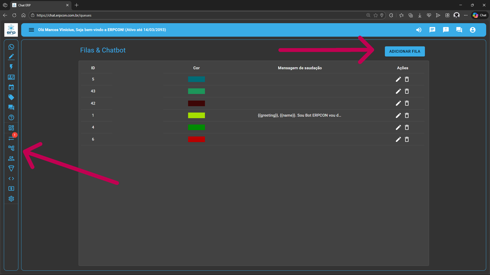
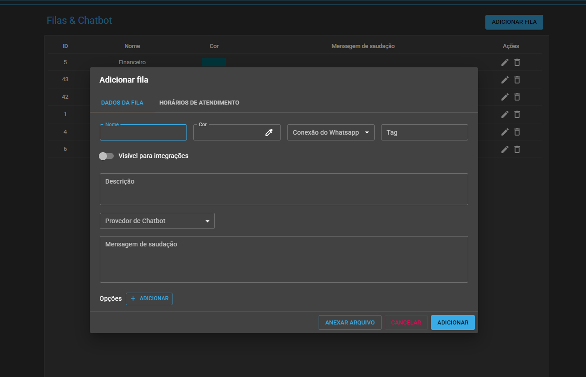

Visão Geral do Módulo
O módulo de Filas & Chatbot é o pilar estrutural do seu atendimento. Ele permite organizar a entrada de leads por departamentos (ex: Comercial, Suporte) e definir a primeira camada de interação automática do cliente.
Nível de Acesso
A criação e edição de fluxos são restritas exclusivamente ao perfil de Administrador, garantindo a integridade dos processos corporativos.
Elementos de Tela
Identifique filas por Cores, Nomes e Mensagens de Saudação personalizadas para cada ponto de contato.
Adicionando uma Nova Fila
Ao iniciar o cadastro, você parametrizará a conexão de saída de mensagens e o comportamento do bot para aquele setor específico.
Definição de Provedores
Selecione o motor de inteligência: Chatbot Interno (menu nativo), Typebot (fluxos complexos) ou Webhook/N8N (integrações externas).

Protocolo de Salvamento Crítico
Alterações em opções (títulos, textos ou ações) requerem o clique obrigatório no ÍCONE DE DISQUETE. Ignorar este passo resultará na perda dos dados configurados antes da finalização.